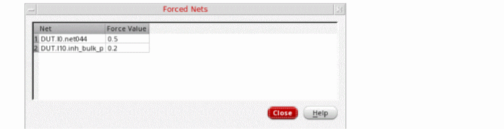
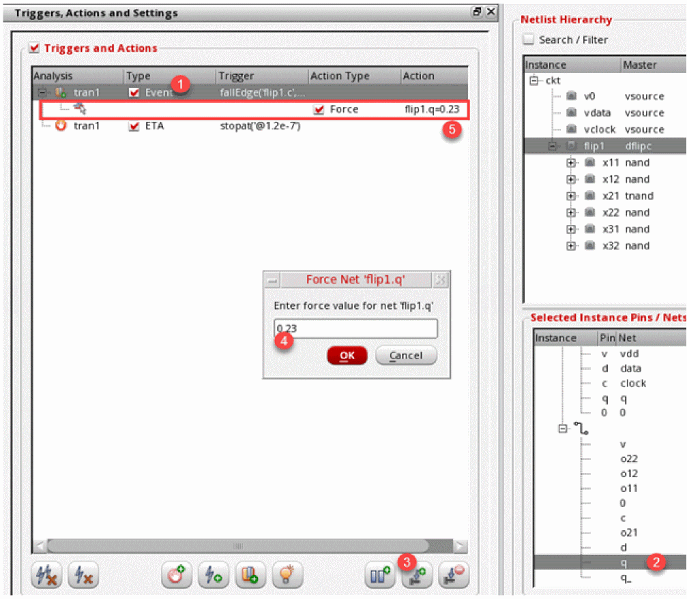

1
Introduction to Spectre Interactive Environment
Spectre Interactive Environment is a debugging environment for Spectre simulations where you can identify the cause of an incorrect output value or an unexpected behavior during a previously run simulation.
If you have an idea about the time point or event, such as a change in the value of a net or terminal, when an issue is occurring, you can use Spectre Interactive Environment to explore the results near that time or event to identify the exact cause. You can further trace back the problem in the design or testbench, and make the required changes to get the desired simulation results.
To facilitate debugging, Spectre Interactive Environment provides various features, such as breakpoints and triggers, that you can use to pause the simulation at any specific point where you need to monitor the value of nets or terminals. You can access circuit instances and connections, and modify their parameters at different events to measure the outputs. These features help you perform a detailed analysis to identify the exact nodes where you can modify the design to improve performance.
In Spectre Interactive Environment, you can perform the following operations before or during a simulation run:
- Pre-simulation operations
-
Operations while a simulation is running
- Iterate over each of the circuit elements and query information about the nodes and instance parameters (can also be performed during pre-simulation).
- Iterate over each of the circuit options and query information about the various option parameters (can also be performed during pre-simulation).
- Intercept the simulation after major analysis events (such as acceptance of each time point in transient analysis), query the simulator, and then instruct the simulator to stop or continue the simulation from the same point.
- Access the values of probes during the simulation.
- Register call-back methods or observer objects that can be scheduled to be called/notified at major analysis events (such as acceptance of each time point in transient analysis).
In this chapter, you will learn about:
- Getting Started with Spectre Interactive Environment
- Introducing the Spectre Interactive Environment User Interface
- Working with Spectre Interactive Environment
- Creating Setup for Debugging
- Configuring Settings in Spectre Interactive Environment
-
Working with States in Spectre Interactive EnvironmentTo explore the functionality provided by Spectre Interactive Environment, you can use the workshop database and examples available in the Virtuoso installation at following location:
<install-dir>/tools/dfII/samples/sie/sieWorkshop.tar.gz
Licensing Requirements
Spectre Interactive Environment requires the Spectre Interactive for Python and TCL (38530) license.
If you do not have access to this license, Spectre does not start and exits with an error.
For more information on the license checkout requirements for Spectre Interactive Environment, see Virtuoso Software Licensing and Configuration Guide.
Getting Started with Spectre Interactive Environment
Preparing the Setup for Spectre Interactive Environment
Before running Spectre Interactive Environment, ensure that the following are available:
Launching Spectre Interactive Environment
You can launch Spectre Interactive Environment in two ways:
- From Virtuoso ADE Assembler by using the context-sensitive menu on the Results tab
-
From the command prompt by using the
siecommand
Launching Spectre Interactive Environment from ADE Assembler
To start Spectre Interactive Environment from ADE Assembler:
-
In Virtuoso ADE Assembler, run a simulation with transient analysis.
-
After the simulation is complete, right-click on a result in the Results tab and choose Spectre Interactive Environment.
Launching Spectre Interactive Environment from the Command Prompt
To start Spectre Interactive Environment from the command prompt:
-
Run any of the following commands:
-
sie<any-command-line-argument> to run Spectre Interactive Environment and provide any command-line argument to be sent to Spectre. This is useful when you need to directly send an argument to Spectre that does not have a corresponding command-line argument for the sie command. -
sie-sie_load<sie-setup-file-name> to run Spectre Interactive Environment and load an existing setup.For help on the various command-line options, run thesie-sie_helpcommand. A list of all command-line options and their use is displayed. You can also refer to Command-Line Options for thesieCommand.
-
The Spectre Interactive Environment is displayed, as shown below.
For details about the user interface, refer to Introducing the Spectre Interactive Environment User Interface.
Command-Line Options for the sie Command
When launching Spectre Interactive Environment from the command prompt, you can specify any command-line argument for Spectre. In addition, you can specify the additional argument listed below.
The following examples show how you can use the command-line arguments:
sie dflip.scs
sie -sie_load t8.sie -sie_run
sie -sie_load tst1.sie -sie_restore spectre_saved_state_Tue_Nov_14_2017_11_47_02.srf
sie ball.ckt -sie_quiet -sie_plot -sie_update 1000
sie +aps -64 input.scs
Also see: Environment Variables
Introducing the Spectre Interactive Environment User Interface
The following figure describes the various sections in the Spectre Interactive Environment user interface:
The following sections explain the main components in the Spectre Interactive Environment user interface:
Menus
The Spectre Interactive Environment window contains the following menus:
Toolbars
The Spectre Interactive Environment window contains one toolbar, as shown below.
The following table describes the commands on this toolbar:
Working with Spectre Interactive Environment
Working with Spectre Interactive Environment to debug simulation involves the following main tasks:
- Starting Spectre Interactive Environment with Results of Simulation Run Earlier
- Creating Setup for Debugging
- Running Simulations Using Trigger Actions and Breakpoints
- Configuring Settings in Spectre Interactive Environment
- Working with States in Spectre Interactive Environment
Starting Spectre Interactive Environment with Results of Simulation Run Earlier
Since the objective is to debug the results of a simulation that has already run, you need to begin with loading those results. Depending on how the previous simulation was run, you can load the results in these ways:
- If the previous simulation was run using Virtuoso ADE Assembler, on the Results tab, select the result of an output of a particular point you want to focus on.
- If the previous simulation was run using Spectre at the command line, run Spectre Interactive Environment using the sie command and provide the path to the results or a saved state to be loaded as a command-line argument.
- Spectre Interactive Environment passes the Spectre command-line arguments to Spectre Interactive to start a new Spectre session. Next, Spectre Interactive Environment queries the Spectre session to access the netlist and other options, and displays the details in different assistants of the Spectre Interactive Environment user interface so that user can interact with it.
-
The tool reads the initial netlist used for that point and loads the instance and pin details from the hierarchy in the Netlist Hierarchy assistant.
If the number of instances in the netlist is more than the limit set by the $SIE_INST_LIMIT <num> environment variable, the tool displays a warning message. You can modify the limit to read more instances. However, this would increase the time to load the details.
Select the Show Full Hier Instance check box to see the full hierarchy path on instances. The table displays an additional column, Hier Inst, to show the hierarchical net view. -
The outputs defined in the ADE Assembler setup are displayed in the Outputs section of the Interaction assistant.
-
The details of the transient analyses extracted from the netlist are also displayed in the Analyses section of the Interaction assistant.
The Analyses section displays the following: -
Choose Tools – Show/Edit Parameter Values to view the parameter values saved in the netlist for the selected point. The Parameter Values form is displayed.
The Name column shows the names of all parameters saved in the netlist. The Nominal column shows the parameter values used in the netlist file.For all points except the first point, an additional column, Override (not shown in the figure), is also displayed on the Parameter Values form. The values of variables in the first point are considered as base values. Any parameter value modified for other points is considered as an overridden value and displayed in the Override column. For more details, refer to Editing Subcircuit Parameters.
Run a simulation from Spectre Interactive Environment with the initial setup and view its results.
-
Click Start running simulation from the beginning
 on the toolbar.
on the toolbar.
The simulation is run and its progress and other details are displayed in the Log Information assistant.
When the simulation run is complete, the results are displayed in the Simulation Results window, as shown below.
You can review the output at different time intervals and decide the scope for debugging, which may involve editing the parameter values, defining trigger events, and actions.
You can also click on the toolbar and plot the results of the current simulation run in Spectre Interactive Environment in the Virtuoso Visualization and Analysis XL window.
Creating Setup for Debugging
An important task in debugging is to create a setup that helps in identifying the problem area and gives clues for possible changes.
Creation of a setup for debugging involves the following steps:
- Selecting Outputs for the Debug Simulation Run
- Editing Parameter Values
- Forcing Values on Nets
- Creating Actions and Breakpoints for Events
Selecting Outputs for the Debug Simulation Run
When running Spectre Interactive Environment from ADE Assembler, by default, the outputs from the ADE setup are copied to the Outputs section of the Interaction assistant.
When running Spectre Interactive Environment from the command prompt in a new setup, you need to select the outputs to be saved while running a debug simulation.
To select outputs, perform the following steps:
-
Select an instance from the list of instances in the upper section of the Netlist Hierarchy assistant.
A list of instance pins, nets connected to pins, and instance parameters, are displayed in the Selected Instance Pins/Nets section of the Netlist Hierarchy assistant. -
To save the voltage value for a net, right-click the net name in the Selected Instance Pins/Nets section and choose Save Output.
The net name is added to the Outputs section of the Interaction assistant, as shown below.
-
To save the current value, right-click the net name in the Selected Instance Pins/Nets section and choose Save Pin Current Output.
An <instance-name>.<pin-name>output is added to the Outputs section of the Interaction assistant.
Managing the Selected Outputs
You can manage the outputs selected in the Outputs table by using the following commands given at the bottom of Interaction assistant:
Editing Parameter Values
You can edit the values for subcircuit parameters or instance parameters.
Editing Subcircuit Parameters
To edit the value for any subcircuit parameter in the netlist so that the updated value is used for the simulation run in Spectre Interactive Environment, follow these steps:
-
Choose Tools – Show/Edit Parameter Values to open the Parameter Values form.
The Override column is visible when you open Spectre Interactive Environment from the results of the first simulation point. The values of variables in the first point, or the initial netlist, are considered as base values. Any parameter value modified for other points is considered as an overridden value and displayed in the Override column. -
Edit the value of the required parameter in the Value (Editable) column.
Editing Instance Parameters
To edit the value for any parameter for an instance or pin, perform the following steps:
-
Click an instance in the Instance list shown in the upper section of the Netlist Hierarchy assistant.
A list of instance pins, nets connected to pins, and instance parameters, are displayed in the Selected Instance Pins/Nets section of the Netlist Hierarchy assistant. -
Double-click the instance or pin name in the Selected Instance Pins/Nets section.
The Edit Parameter <param-name> form is displayed and the current value of the parameter is displayed in a text field.
- Edit the parameter value.
-
Click OK.Currently, you can edit the parameters for an instance of a pin only when you open Spectre Interactive Environment from the command prompt.
Any change in the parameter value takes effect only in the next simulation run from Spectre Interactive Environment. Until then, the changes are considered aspendingand are not reflected in the Parameter Values form. Before running the next simulation, you can either clear the pending changes to reuse the previous values, or revert all changes in the parameters since the original (initial) run.
Clearing Pending Parameter Changes
To clear the pending parameter value changes that were done after the previous run or before the first run in Spectre Interactive Environment:
When the pending changes are cleared, the parameter values from the previous run are used in the next simulation run.
-sie_params.Reverting Parameter Changes
To revert the pending parameter value changes that were done after the previous run or before the first run in Spectre Interactive Environment:
When all parameter changes are reverted, the parameter values from the initial (original) run are used in the next simulation run.
-sie_params.Forcing Values on Nets
If you want to use a specific value for a net, which is different from the value in netlist, and keep it constant while you vary the value of other nets and analyze the result, you can force a value on that net.
To force a value on a net, perform the following steps:
- Right-click the net in the Selected Instance Pins/Nets section of the Netlist Hierarchy assistant.
-
Choose Force Net.
The Force Net form is displayed.
- Specify a value to be used for this net.
- Click OK.
Viewing Nets with Forced Values
At any point, you can view all the nets on which values are forced.
To view the nets on which values are forced:
-
Choose View – View Current Forced Nets.
The Forced Nets form is displayed, as shown below.
If required, you can edit the values in the Forced Nets form.
Removing Forced Values from Nets
To remove a forced value from a net, select the net and perform the following steps:
- Right-click the net in the Selected Instance Pins/Nets section of the Netlist Hierarchy assistant.
-
Choose Release Net.
Creating Actions and Breakpoints for Events
While debugging an output, you might be interested in specific events, such as a change in the value of an output and the time when that happens. Accordingly, you might want to analyze the values of other outputs and parameters at that time, or perform a specific action. Using Spectre Interactive Environment, you can specify events to look for and create triggers to perform a specific action when those events happen.
For example, for a clock net, you can look for the event when it reaches the rising threshold, and then add a trigger to pause the simulation run.
To create an action or breakpoint, you need to first identify the outputs you want to check and create events.
Creating Events
To create an event in Spectre Interactive Environment, perform the following steps:
-
In the Triggers, Actions and Settings assistant, click (
) to open Trigger Event Creation Assistant.
- In the Interactions assistant, select an output in the Outputs list.
-
In the Construct section of Trigger Event Creation Assistant, select a type of event and action.
An event can be selected for a change in the following type of values:- V: Voltage. This can be used for net voltage, device signals, or Verilog-A variable.
- I: Current. This can be used for an instance terminal.
- Time: The current time of a simulation run is checked.
You can look the following type of changes:- Rising: The value shows an increasing trend. The event happens when the value of the given type rises above the given threshold.
- Falling: The value shows a decreasing trend. The event happens when the value of the given type falls below the given threshold.
- >: The value is greater than the given value. The event happens when the value of the given type becomes greater then the value specified for the event.
- <: The value is smaller than the given value. The event happens when the value of the given type becomes less then the value specified for the event.
-
Click Add Element.
A form is displayed where you can enter the threshold value for the element. -
Click
in the Triggers, Actions and Settings assistant.
The Rising Voltage form is displayed, as shown below.
-
Enter a threshold value and click OK.
An event is created with the given details and displayed in the Trigger Event Elements list, as shown below.
Similarly, you can create multiple events that you want to look for when a debug simulation is running. An example is shown below.
It is mandatory to include at least one rising or falling action for an event. If you define multiple rising or falling actions, they are joined using OR, which implies that either of these actions can cause this event to happen. However, if you define multiple > or < actions, they are joined using AND. -
After defining the events, click Done in the Trigger Event Elements section.
A new row is added to the Triggers and Actions table, as shown below.
Next, proceed with creation of triggers and actions as described in Creating Actions and Triggers.
Creating Actions and Triggers
Actions and triggers define the steps to be performed when an event happens while the simulation run for debugging is in progress.
You can define triggers in the following ways:
- Using the events defined in the Trigger Event Elements section of the Trigger Event Creation Assistant
- Using specific time points
- Using python expressions
- Using breakpoints for time
- Using breakpoints for assertions
Creating Triggers Using Events
To define an action or trigger using the defined events, perform the following steps:
-
Create an event as described in Creating Events.
For each event a new row is added to the Triggers and Actions table, as shown below.
In this row, the left most column shows the name of the transient analysis for which this trigger is applicable. The Type column is set toEventbecause the trigger is corresponding to an event. The details of the event are added using anORoperator and displayed in the Trigger column. -
Click
 in the Triggers, Actions and Settings assistant to add a pause action for the trigger.
in the Triggers, Actions and Settings assistant to add a pause action for the trigger.
A pause action is added for the trigger, as shown below.
Creating Triggers Using Time Points
To create triggers using specific time points, perform the following steps;
-
Click
 in the Triggers, Actions and Settings assistant.
in the Triggers, Actions and Settings assistant.
The Add Event Time form is displayed.
- Specify a space- or comma-separated list of time points when you want to trigger an action.
-
Click OK.
A new row is added in the Triggers and Actions table, as shown below.
-
Add an appropriate action for the event.
You can add two types of actions:-
Pause action: For this, click
 in the Triggers, Actions and Settings assistant to add a pause action for the trigger.
in the Triggers, Actions and Settings assistant to add a pause action for the trigger. -
Force net action: For this, select a net an click
in the Triggers, Actions and Settings assistant. The Force Net form is displayed. Add a value that you want to force on the net and click OK. A force action is added for the selected event, as shown below.
-
Release net action: For this, select a net in the Selected Instance Pins/Nets section. Next, click
in the Triggers, Actions and Settings assistant. An action to release net is added for the selected event, as shown below.If you do not select any net in the Selected Instance Pins/Nets section, Spectre Interactive Environment displays a message to confirm whether you want to release the forced values from all nets. If you click Yes, an action is created for that, as shown below.
-
Pause action: For this, click
Creating Triggers Using Python Expressions
To create triggers using python expressions, perform the following steps:
-
Click
in the Triggers, Actions and Settings assistant.
The Add Trigger Event form is displayed.
- Specify an expression for a trigger for the selected analysis.
-
Click OK.
A new row is added in the Triggers and Actions table. -
Click
in the Triggers, Actions and Settings assistant to add a pause action for the trigger.
Using Breakpoints for Specific Time Points
You can add breakpoints to stop a debug simulation at specific time points. To add a breakpoint, perform the following steps:
- Ensure that Trigger Event Creation Assistant is closed. If not, use the toggle button to open or close this assistant.
- Click in the Triggers, Actions and Settings assistant.
- The Event Triggered Analysis (ETA) Breakpoint section is displayed within the assistant.
-
Add a time value in the Time field, as shown below.

-
Select Exact Time if you want to add a breakpoint at exactly the same time. For example, if you specify the stop time as
3.4nand select Exact Time, the simulation will stop exactly at3.4n. - Ensure that Type is set as Time.
- Click Add.
-
A breakpoint trigger with trigger as
stopatis added in the Triggers and Actions table, as shown below.
You do not need to add specific actions for the breakpoints. Therefore, the buttons to add actions for events are disabled when you select a breakpoint trigger in the Triggers and Actions table.
Using Breakpoints for Assertions
If the Spectre netlist includes assertions, Spectre Interactive Environment can read the assertions from the netlist. You can add breakpoints to pause a debug simulation whenever an assertion defined in the netlist becomes true.
To add a breakpoint for an assertion, perform the following steps:
- Ensure that Trigger Event Creation Assistant closed. If not, you can use the toggle button to open or close this assistant.
-
Click
 in the Triggers, Actions and Settings assistant.
in the Triggers, Actions and Settings assistant. -
The Event Triggered Analysis (ETA) Breakpoint section is displayed within the assistant.
-
Select Assertion from the Type section.
The Time section is hidden and the Assertion section is displayed, as shown below.
The Name drop-down list contains all the assertions saved in the netlist. - Select an assertion from the Name drop-down list.
-
In the Occurrence group box, specify the occurrences you want to check for the selected assertion. The following options are available in this group:
- All: Adds a breakpoint at every occurrence of the assertion during the simulation run.
- Single: Adds a breakpoint at the first occurrence of the assertion during the simulation run.
- Multiple: Adds multiple breakpoints at the first few occurrences of the assertion during the simulation run. You can specify the number of occurrences to check for in the Number spin box.
- Specify the number of occurrences to check for in the Number spin box.
- If you want to add a delay before applying a breakpoint in the simulation run, specify the delay time (in seconds) in the Delay field.
- Click Add.
-
A breakpoint trigger with trigger as
stopatis added in the Triggers and Actions table.
When you run the simulation after the setup is complete, a breakpoint is added for these assertion checks for the given number of occurrences.
Running Simulations Using Trigger Actions and Breakpoints
When the events and triggers are defined, you can run a debug simulation and use the trigger actions and breakpoints to analyze the outputs values.
The simulation starts. Spectre Interactive Environment keeps checking for the defined events. When any event happens, it triggers the action specified for it, as shown in the example given below.
The logs are displayed in the Log Information assistant.
The Simulation Results table shows the results of the simulation run at each time step of the transient analysis, as shown below.
The timesteps are indicated on the Simulated Output Timestep progress bar in the Interaction assistant. Values of the outputs at a timestep are displayed in the Value column of the Outputs table.
You can move the time steps using the arrows on the Simulated Output Timestep progress bar to analyze the outputs at different points.
You can also plot graphs for the outputs. For this, select the Plot check box for the outputs and click
on the toolbar. The ViVA XL window is displayed and the outputs are plotted. A marker is added at the timestep of the breakpoint.
To continue to run the simulation from the paused state, click
on the toolbar. The simulation continues to the end or again breaks at a time, whichever comes first. The results are then displayed in a new Simulation Results table.
At any point of time during the simulation run, you can click
to stop the simulation run. If the simulation is already in the paused state and the result table is displayed, the run is stopped. If the simulation is in progress, it is stopped and the displays the results at the current time.
Configuring Settings in Spectre Interactive Environment
To configure various settings in Spectre Interactive Environment:
The Settings section is displayed in the Triggers, Actions and Settings assistant.
You can configure the following settings in this section:
-
Results
- Create Multiple Result Tables: Creates a separate results table after every breakpoint or after the end of simulation. Each result table is saved for a start and end time. When this setting is disabled, all results are appended to a single results table.
-
Final Timesteps Limit: Saves the results for only the final 'n' timepoints before end of simulation or breakpoint instead of saving the results for all the points. Since the results are saved only for the selected time points, the time to run simulations and to save results is reduced a lot.
-
Display Digits
- Times: Controls the number of significant digits to be displayed for time values in the simulation results. When set to 0, the time values are shown with full resolution. The default value is 8.
-
Values: Controls the number of significant digits to be displayed for output values in the simulation results. When set to 0, the output result values are shown with full resolution. The default value is
6.
-
Plotting
- Autoplot at End of Simulation: Update plots with new results at the end of the simulation, or at breakpoints
- Add Breakpoint Labels to Plots: Shows markers on plots where breakpoints were found
- Plot Added Outputs: Enables plotting of new outputs to be saved
-
Add Outputs to Existing Plots: Keeps existing plots and adds new plots to the same graphsYou can configure the default values for these settings by using the environment variables documented in Environment Variables.
Working with States in Spectre Interactive Environment
You can save the setup of the Spectre Interactive Environment in a state file and load it again for reuse.
Saving State
To save the state, perform the following steps:
-
Choose File – Save.
Alternatively, click on the toolbar. - In the sie Save FileName form, specify a location and name for the state file.
-
Click Save.
The state is saved with the given file name and.sieextension.
Loading State
To load a saved state in the Spectre Interactive Environment interface, perform the following steps:
-
Choose File – Open.
Alternatively, click on the toolbar. - In the sie Load FileName form, select the name for the state file.
-
Click Open.
The state is loaded from the given file.
Return to top